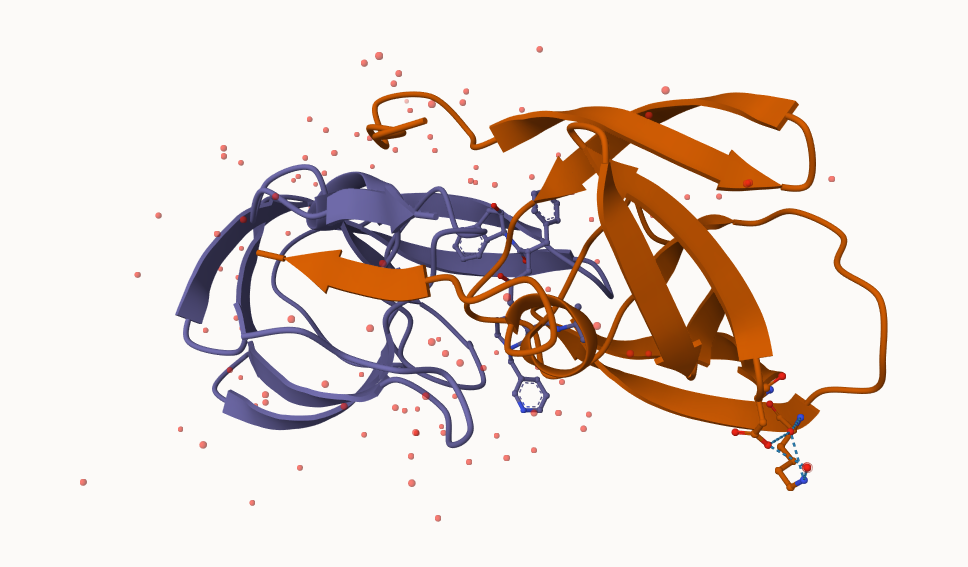

X.ray EM NMR Multiple.methods
184362 20191 14237 234
Neutron Other Total
79 37 219140
apply(stats, 2, sumcomma) /sumcomma(stats$Total)
X.ray EM NMR Multiple.methods
0.8412978005 0.0921374464 0.0649676006 0.0010678105
Neutron Other Total
0.0003605001 0.0001688418 1.0000000000
as.numeric(c(10, "10,000"))
Warning: NAs introduced by coercion
[1] 10 NA
(184362/219140)*100
[1] 84.12978
About 84% solved by X-ray.
(20191/219140)*100
[1] 9.213745
About 9% solved by EM.
Q2: What proportion of structures in the PDB are protein?
248,805,733 - 186,898
186898/248805733*100
[1] 0.07511804
Visualizing the HIV-1 protease structure
Mol* (“mol-star”) viewer is now everywhere. The homepage is here: https://molstar.org/viewer/
I want to insert my image from Mol* here.

My first molecular image
This image highlights an important water molecule and ASP25 on both chains by changing them into spacefill
Working with bio3d package
library(bio3d)
pdb <-read.pdb("1hsg")
Note: Accessing on-line PDB file
pdb
Call: read.pdb(file = "1hsg")
Total Models#: 1
Total Atoms#: 1686, XYZs#: 5058 Chains#: 2 (values: A B)
Protein Atoms#: 1514 (residues/Calpha atoms#: 198)
Nucleic acid Atoms#: 0 (residues/phosphate atoms#: 0)
Non-protein/nucleic Atoms#: 172 (residues: 128)
Non-protein/nucleic resid values: [ HOH (127), MK1 (1) ]
Protein sequence:
PQITLWQRPLVTIKIGGQLKEALLDTGADDTVLEEMSLPGRWKPKMIGGIGGFIKVRQYD
QILIEICGHKAIGTVLVGPTPVNIIGRNLLTQIGCTLNFPQITLWQRPLVTIKIGGQLKE
ALLDTGADDTVLEEMSLPGRWKPKMIGGIGGFIKVRQYDQILIEICGHKAIGTVLVGPTP
VNIIGRNLLTQIGCTLNF
+ attr: atom, xyz, seqres, helix, sheet,
calpha, remark, call
head(pdb$atom)
type eleno elety alt resid chain resno insert x y z o b
1 ATOM 1 N <NA> PRO A 1 <NA> 29.361 39.686 5.862 1 38.10
2 ATOM 2 CA <NA> PRO A 1 <NA> 30.307 38.663 5.319 1 40.62
3 ATOM 3 C <NA> PRO A 1 <NA> 29.760 38.071 4.022 1 42.64
4 ATOM 4 O <NA> PRO A 1 <NA> 28.600 38.302 3.676 1 43.40
5 ATOM 5 CB <NA> PRO A 1 <NA> 30.508 37.541 6.342 1 37.87
6 ATOM 6 CG <NA> PRO A 1 <NA> 29.296 37.591 7.162 1 38.40
segid elesy charge
1 <NA> N <NA>
2 <NA> C <NA>
3 <NA> C <NA>
4 <NA> O <NA>
5 <NA> C <NA>
6 <NA> C <NA>
pdbseq(pdb)[25]
25
"D"
Predicting functional motions of a single structure
We can do a bioinformatics prediction of functional motions (i.e. flexibility/dynamics):
pdb <-read.pdb("6s36")
Note: Accessing on-line PDB file
PDB has ALT records, taking A only, rm.alt=TRUE
.png)